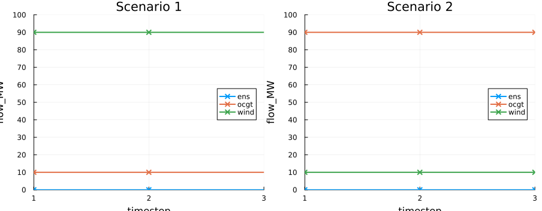

Risk-Averse Investment with Conditional Value at Risk (CVaR)
Introduction
Energy system planning must deal with uncertainty: wind and solar availability variations, demand changes, and fuel prices variations year to year. The standard risk-neutral stochastic approach minimises the expected cost across scenarios, but this can lead to solutions that perform well on average yet expose the system to high costs in bad years.
Conditional Value at Risk (CVaR) is a risk measure that addresses this problem by penalising the worst outcomes. At confidence level $\alpha$, $\text{CVaR}_\alpha$ is the average cost of the $(1-\alpha)$-fraction of most expensive operational scenarios. Tulipa's mean-CVaR objective uses both expected operational cost and CVaR through a risk-aversion weight $\lambda$. The investment ($C^I$) and fixed ($C^F$) costs are always included in the objective because they don't depend on the scenarios set in Tulipa, while the operational cost ($C^O$) is split into expected cost and CVaR:
\[\text{minimise} \quad \underbrace{C^I + C^F}_{\substack{\text{non-scenario}\\\text{dependent costs}}} + (1 - \lambda) \cdot \underbrace{\mathbb{E}[C^O]}_{\substack{\text{expected}\\\text{operational cost}}} + \lambda \cdot \underbrace{\text{CVaR}_{\alpha}[C^O]}_{\text{risk measure}}\]
| $\lambda$ | Behaviour |
|---|---|
0.0 | Risk-neutral: minimise expected cost only |
0.5 | Balanced: equal weight on expected cost and CVaR |
1.0 | Fully risk-averse: minimise CVaR only |
In Tulipa, CVaR is only activated when both $\lambda > 0$ and there are at least two stochastic scenarios. Otherwise, the model reduces to the standard expected-cost minimisation.
In this tutorial you will learn how to:
- Set up a two-scenario energy system.
- Activate CVaR via
model-parameters.csv. - Interpret the CVaR decision variables $v^\mu$ and $v^\xi_s$.
- Observe how varying $\lambda$ changes the optimal investment.
For the mathematical background, see Risk-Averse Optimization with CVaR in the user guide.
The Energy System
We model a small electricity system with two stochastic scenarios representing different wind years:
| Scenario | Probability | Wind availability |
|---|---|---|
| 1 — Good wind year | 0.6 | 90 % of installed capacity |
| 2 — Bad wind year | 0.4 | 10 % of installed capacity |
The system has four assets:
| Asset | Type | Description |
|---|---|---|
wind | Producer (investable) | Wind farm, 100 MW/unit, 0 €/MWh |
ocgt | Producer (existing) | Gas turbine, 100 MW, 50 €/MWh |
demand | Consumer | Constant demand of 100 MW |
ens | Producer (existing) | Energy not served, 200 MW, 500 €/MWh |
Wind is the only investable asset with investment cost 100 €/MW. The optimizer decides how much wind capacity to build (up to 100 MW = 1 unit) before the scenarios are revealed.
Loading the Data
import TulipaIO as TIO
import TulipaEnergyModel as TEM
using DuckDB
using DataFrames
using Plots
input_dir = joinpath(@__DIR__, "my-awesome-energy-system/tutorial-cvar")
connection = DBInterface.connect(DuckDB.DB)
TIO.read_csv_folder(connection, input_dir)
TEM.populate_with_defaults!(connection)The default model-parameters.csv in the case study activates CVaR with $\lambda = 0.5$ and $\alpha = 0.8$:
DataFrame(DuckDB.query(connection, """
SELECT discount_year, discount_rate,
risk_aversion_weight_lambda AS lambda,
risk_aversion_confidence_level_alpha AS alpha
FROM model_parameters
"""))| Row | discount_year | discount_rate | lambda | alpha |
|---|---|---|---|---|
| Int64 | Float64 | Float64 | Float64 | |
| 1 | 2030 | 0.0 | 0.5 | 0.8 |
The two stochastic scenarios and their probabilities:
DataFrame(DuckDB.query(connection, "SELECT * FROM stochastic_scenario"))| Row | scenario | probability | description |
|---|---|---|---|
| Int32 | Float64 | String | |
| 1 | 1 | 0.6 | Good wind year (high availability) |
| 2 | 2 | 0.4 | Bad wind year (low availability) |
Let's have a look at the representative periods and their mapping to the original periods and scenarios:
DataFrame(DuckDB.query(connection, """
SELECT scenario, period, rep_period, weight
FROM rep_periods_mapping
"""))| Row | scenario | period | rep_period | weight |
|---|---|---|---|---|
| Int32 | Int32 | Int32 | Float64 | |
| 1 | 1 | 1 | 1 | 1.0 |
| 2 | 1 | 2 | 1 | 1.0 |
| 3 | 1 | 3 | 1 | 1.0 |
| 4 | 2 | 1 | 2 | 1.0 |
| 5 | 2 | 2 | 2 | 1.0 |
| 6 | 2 | 3 | 2 | 1.0 |
From here we can see that the first scenario (good wind year) maps to representative period 1, and the second scenario (bad wind year) maps to representative period 2. In addition, we can see that there are 3 original periods in each scenario, each period maps to a representative period with a weight of 1.0. Hence, the total weight for each representative period in the objective function is 3.0.
Finally, wind availability profiles, scenario 1 maped to representative period 1 (availability 0.9), scenario 2 maped to representative period 2 (availability 0.1):
DataFrame(DuckDB.query(connection, """
SELECT profile_name, rep_period, timestep, value
FROM profiles_rep_periods
WHERE profile_name = 'availability-wind'
ORDER BY rep_period, timestep
LIMIT 6
"""))| Row | profile_name | rep_period | timestep | value |
|---|---|---|---|---|
| String | Int32 | Int32 | Float64 | |
| 1 | availability-wind | 1 | 1 | 0.9 |
| 2 | availability-wind | 1 | 2 | 0.9 |
| 3 | availability-wind | 1 | 3 | 0.9 |
| 4 | availability-wind | 2 | 1 | 0.1 |
| 5 | availability-wind | 2 | 2 | 0.1 |
| 6 | availability-wind | 2 | 3 | 0.1 |
Running the Model (λ = 0.5)
energy_problem = TEM.run_scenario(connection; show_log = false)
println("Objective value: ", round(energy_problem.objective_value; digits=2), " €")Objective value: 39700.0 €Investment Decision
With $\lambda = 0.5$, the model builds the full 100 MW of wind:
DataFrame(DuckDB.query(connection, "SELECT asset, capacity, investment_limit, solution AS units_invested FROM var_assets_investment"))| Row | asset | capacity | investment_limit | units_invested |
|---|---|---|---|---|
| String | Float64 | Float64 | Float64 | |
| 1 | wind | 100.0 | 100.0 | 1.0 |
Dispatch by Scenario
In the good wind year (rep period 1 or scenario 1, wind covers 90 MW), the gas turbine only runs at 10 MW:
flow_df = DataFrame(DuckDB.query(connection, """
SELECT
from_asset AS asset,
rep_period AS scenario,
time_block_start AS timestep,
solution AS flow_MW
FROM var_flow
WHERE from_asset IN ('wind', 'ocgt', 'ens')
ORDER BY scenario, asset, timestep
"""))
scenarios = sort(unique(flow_df.scenario))
assets = sort(unique(flow_df.asset))
p = plot(layout = (1, length(scenarios)),
size = (900, 350),
legend = :right,
xlim = (1, 3),
ylim = (0, 100),
xticks = 1:3,
yticks = 0:10:100,
)
for (i, s) in enumerate(scenarios)
sdf = flow_df[flow_df.scenario .== s, :]
for a in assets
adf = sdf[sdf.asset .== a, :]
plot!(p[i],
adf.timestep,
adf.flow_MW;
label = string(a),
lw = 2,
marker = :xcross,
markersize = 4
)
end
plot!(p[i];
title = "Scenario $(s)",
xlabel = "timestep",
ylabel = "flow_MW"
)
end
p
In the bad wind year (rep period 2 or scenario 2, wind covers only 10 MW), the gas turbine runs at 90 MW.
CVaR Decision Variables
When CVaR is active, the model creates two auxiliary variables:
- $v^\mu$ (
var_value_at_risk_threshold_mu): the Value-at-Risk threshold, i.e. the cost level below which a fraction $\alpha$ of scenarios fall. - $v^\xi_s$ (
var_tail_excess_slack_xi): the tail excess for scenario $s$, representing by how much scenario $s$ costs exceed the VaR threshold.
mu_df = DataFrame(DuckDB.query(connection, "SELECT solution AS var_mu FROM var_value_at_risk_threshold_mu"))
println("VaR threshold μ = ", mu_df.var_mu[1], " €")VaR threshold μ = 40500.0 €DataFrame(DuckDB.query(connection, """
SELECT s.scenario, s.description, x.solution AS xi_s
FROM var_tail_excess_slack_xi As x
JOIN stochastic_scenario s ON x.id = s.scenario
ORDER BY s.scenario
"""))| Row | scenario | description | xi_s |
|---|---|---|---|
| Int32 | String | Float64 | |
| 1 | 1 | Good wind year (high availability) | 0.0 |
| 2 | 2 | Bad wind year (low availability) | 0.0 |
The VaR threshold $v^\mu = 40{,}500$ € equals the total operating cost of the bad wind year, which considers the weight of the representative period in the objective function (OCGT at 3 x 90 MW for 3 h × 50 €/MWh = 40,500 €). The tail excess for both scenarios is zero because the bad year is the worst case at the 80 % confidence level, so $\text{CVaR}_{0.8} = v^\mu = 40{,}500$ €.
The full objective is:
\[f = 10{,}000 + (1 - 0.5) \times (0.6 \times 4{,}500 + 0.4 \times 40{,}500) + 0.5 \times 40{,}500 = 39{,}700 \text{ €}\]
Sensitivity to Risk Aversion (λ = 0 and λ = 1)
Risk-Neutral Benchmark (λ = 0)
With $\lambda = 0$ the model minimises only the expected cost and ignores worst-case scenarios.
conn0 = DBInterface.connect(DuckDB.DB)
TIO.read_csv_folder(conn0, input_dir)
TEM.populate_with_defaults!(conn0)
DuckDB.query(conn0, "UPDATE model_parameters SET risk_aversion_weight_lambda = 0.0")
ep0 = TEM.run_scenario(conn0; show_log = false)
println("λ=0 objective: ", round(ep0.objective_value; digits=2), " €")
inv0 = DataFrame(DuckDB.query(conn0, "SELECT solution AS units_invested FROM var_assets_investment"))
println("Wind units invested: ", inv0.units_invested[1])λ=0 objective: 28900.0 €
Wind units invested: 1.0The risk-neutral model still invests fully in wind because the expected operational cost savings (18,900 €/unit) exceed the investment cost (10,000 €/unit).
Fully Risk-Averse (λ = 1)
With $\lambda = 1$ the model minimises CVaR alone, completely ignoring expected cost.
conn1 = DBInterface.connect(DuckDB.DB)
TIO.read_csv_folder(conn1, input_dir)
TEM.populate_with_defaults!(conn1)
DuckDB.query(conn1, "UPDATE model_parameters SET risk_aversion_weight_lambda = 1.0")
ep1 = TEM.run_scenario(conn1; show_log = false)
println("λ=1 objective: ", round(ep1.objective_value; digits=2), " €")
inv1 = DataFrame(DuckDB.query(conn1, "SELECT solution AS units_invested FROM var_assets_investment"))
println("Wind units invested: ", inv1.units_invested[1])λ=1 objective: 45000.0 €
Wind units invested: 0.0Surprisingly, the fully risk-averse model does not invest in wind at all. Why?
Explaining the CVaR Flip
With no wind (0 units):
| Scenario | Total operational cost |
|---|---|
| Good wind year | 3 x 100 MW × 3 h × 50 €/MWh = 45,000 € |
| Bad wind year | `3 x 100 MW × 3 h × 50 €/MWh = 45,000 € |
Both scenarios have identical cost = 45,000 €, so CVaR = 45,000 €.
With 1 unit of wind (100 MW):
| Scenario | Total operational cost |
|---|---|
| Good wind year | 3 x 10 MW × 3 h × 50 €/MWh = 4,500 € |
| Bad wind year | 3 x 90 MW × 3 h × 50 €/MWh = 40,500 € |
CVaR$_{0.8}$ = 40,500 € (the 80th-percentile worst case is the bad scenario).
But! Forcing to invest in wind in a fully risk-averse model worsens the total cost because the investment (+ 10,000 €) is a sunk cost that increases the bad-year expenditure without providing sufficient operational savings. From CVaR's perspective, wind investment is undesirable in this case.
Results Summary
| $\lambda$ | Wind invested | Objective | E[cost] | CVaR$_{0.8}$ |
|---|---|---|---|---|
| 0.0 (risk-neutral) | 1 unit | 28,900 € | 18,900 € | - |
| 0.5 (balanced) | 1 unit | 39,700 € | 18,900 € | 40,500 € |
| 1.0 (fully risk-averse) | 0 units | 45,000 € | - | 45,000 € |
The transition from "invest" to "don't invest" occurs at $\lambda^* \approx 0.745$. For $\lambda < \lambda^*$ the expected savings dominate; for $\lambda > \lambda^*$ CVaR reduction dominates.
In real-world problems, a moderate $\lambda$ (0.2–0.5) often captures meaningful risk reduction without sacrificing too much expected cost. The right value depends on the decision-maker's risk tolerance and the spread between scenarios.
Summary
In this tutorial you have learned how to:
- Configure the mean-CVaR objective using
risk_aversion_weight_lambda($\lambda$) andrisk_aversion_confidence_level_alpha($\alpha$) inmodel-parameters.csv. - Interpret the CVaR decision variables $v^\mu$ (VaR threshold) and $v^\xi_s$ (scenario tail excess).
- Understand how $\lambda$ controls the trade-off between expected cost and risk: higher $\lambda$ protects against worst-case outcomes but may sacrifice average performance.
- Recognise that CVaR can change investment decisions, assets that are attractive under expected-cost minimisation may be undesirable under high risk aversion.
For further reading, see:
Risk-Averse Optimization with CVaR: user-guide reference for CVaR parameters.Two-Stage Stochastic Optimization: background on the stochastic formulation used here.Mathematical Formulation: full mathematical description of the CVaR objective and constraints.